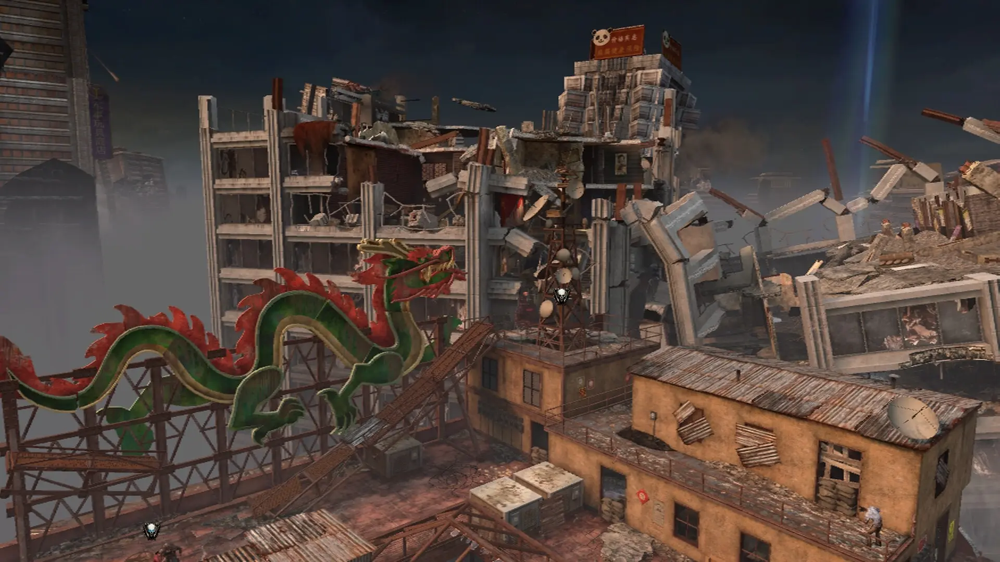

Tranzit is a zombies map from Black Ops 2. The map was very large which made the map's main feature very useful; the tranzit bus. This bus would drive the player around the map, and protected them from the monsters in the fog which surrounded the outskirts of each area. This map is currently being remade as a custom map for Black Ops 3 by VerK0.
Die Rise is a zombies map set in China. The map is large but unlike Tranzit, its size comes from its extreme verticality as it is set in the skyscrapers. Going up and down the map is not as simple as taking the stairs; the elevators around the map must be taken. These elevators traverse the map and contain random perks inside. If the elevator isn's present on your floor, you'll have to wait until it comes to you. This map is currently being remade as a custom map in Black Ops 3 by MrTlexify and XelaZM.
Buried takes place in an underground mine in the U.S. The map is closed off by many non-buyable barriers, although these barriers can be broken using Leeroy, who is a large man that has multiple abilities. He can destroy barriers, lock the mystery box, hold crawlers and craft buildables for you. This map is currently being remade as a custom map in Black Ops 3 by Dannyy_0.